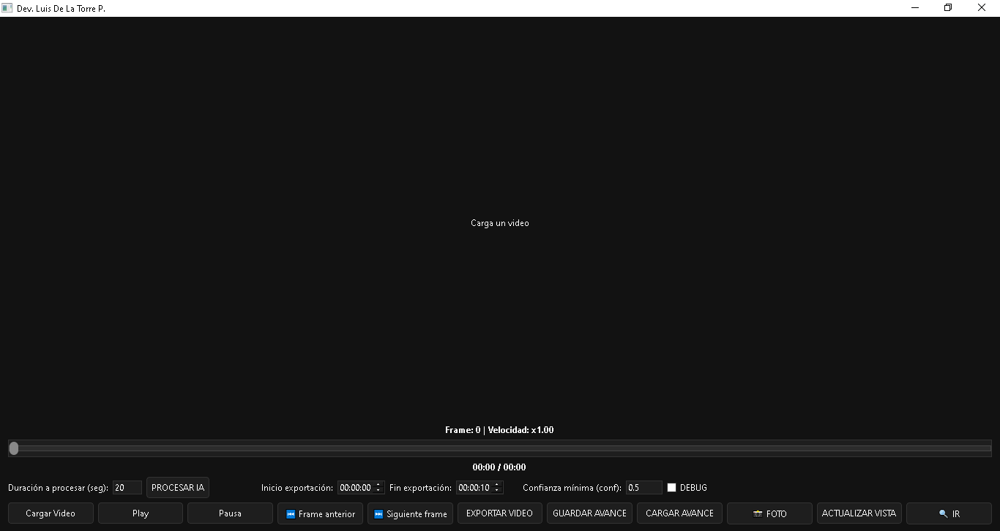
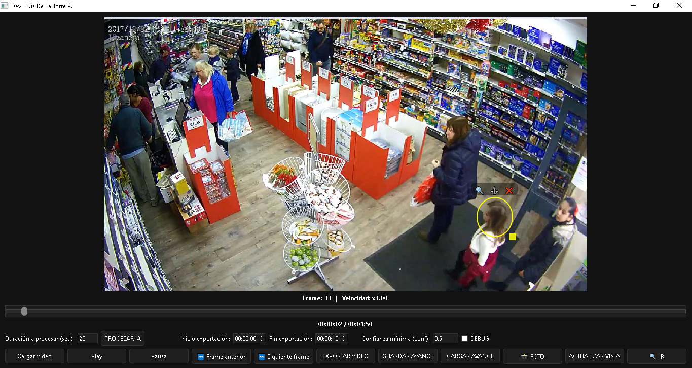
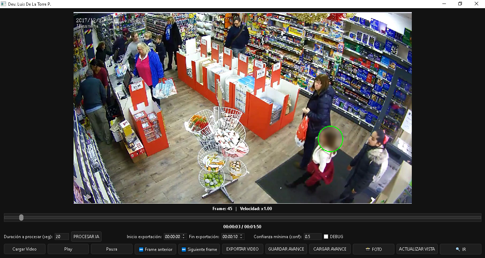

Desarrollador autodidacta | Automatización | Inteligencia Artificial | Herramientas CCTV
Aplicación desarrollada en Python que permite reproducir videos y aplicar difuminado a formas o rostros mediante tecnología de difuminado manual o automático con inteligencia artificial, con el objetivo de proteger la identidad de las personas.
Características:
Nota: Para obtener detecciones automáticas más precisas en videos complejos (por ejemplo, cámaras CCTV), el modelo de inteligencia artificial puede requerir la asistencia del desarrollador para el entrenamiento o ajuste utilizando imágenes del video a procesar. En estos casos se recomienda contactar al correo del desarrollador.
Tecnologías: Python, YOLO, OpenCV, PyTorch, FFmpeg



Ver proyectoHerramienta desarrollada en Python para analizar grabaciones de video y extraer automáticamente imágenes relevantes cuando ocurre movimiento o se detecta la presencia de personas o rostros.
El sistema combina detección de movimiento mediante OpenCV con modelos optimizados de inteligencia artificial utilizando OpenVINO, permitiendo filtrar eventos reales dentro de largas grabaciones de videovigilancia.
Características:
Tecnologías: Python, OpenCV, OpenVINO, NumPy, PyQt
Ver proyectoProyecto desarrollado en Python para Windows que supervisa múltiples rangos de direcciones IP dentro de una red local, incluyendo dispositivos críticos como NVRs y cámaras de videovigilancia.
El sistema detecta en tiempo real fallas de conectividad y, cuando una IP permanece inaccesible durante un tiempo configurable, envía una alerta automática a través de Telegram.
Implementa monitoreo concurrente para garantizar eficiencia incluso al supervisar decenas de dispositivos simultáneamente.
Ver proyecto